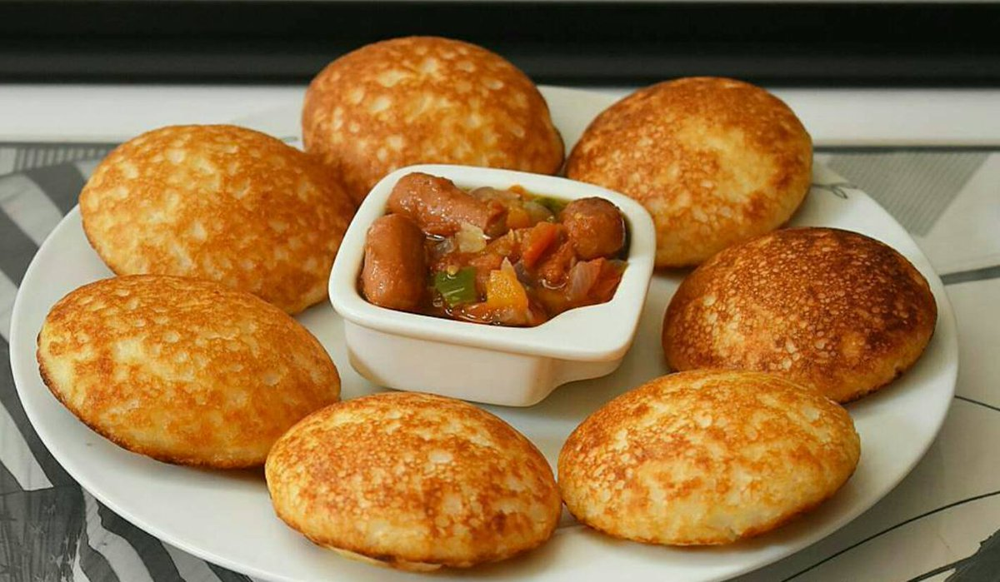

Waina

Description
A traditional Nigerian dish made with rice flour, ground goat meat, and various vegetables
Ingredients
- 4 cups white rice
- 1 cup normal rice (cook)
- 1 tbsp yeast
- 1 tbsp yeast
- 1 tsp baking powder
- Sugar to taste
- Salt to taste
- Medium size onion
- Oil for frying
Steps
- Pick out dirt and wash the rice. Soak in 11/2 cups of water over night. You will notice some foam on top of the water. this indicates a bit of fermentation.
- Boil about 2 tablespoon rice till soft
- Blend the raw rice in the water used in fermenting it till it is smooth
- Add the cooked rice and sugar, blend batter to a smooth paste
- Pour batter into a bowl, add the flour,baking powder and yeast. I used the flour to allow the yeast have something to act on. This way the masa is has amore fluffy texture .
- Allow the batter to rise for about 3-4 hrs. If the atmospheric temperature is hot then 3 hrs is fine
- Mix the batter well and fry in the oiled masa pans or pancake puff pans if you have this. You can also use small moin moin cups but oil very well.
- Serve masa or waina for breakfast or dinner with egg stew, Suya , or any protein of choice